Vector Charts

Chart Panel is always found in the lower right corner of a chart canvas. Click on the Hamburger
Chart Panel is used to toggle settings on/off quickly, reducing clutter, finding information, adding text, removing unnecessary text, etc. by the Watch.
The more detailed options are usually found in Toolbar > Options> Charts > Vector Charts Tab where it is not expected that anyone other than the Captain or Navigator will venture. Watchmen are generally not encouraged to Set Options under Toolbar.
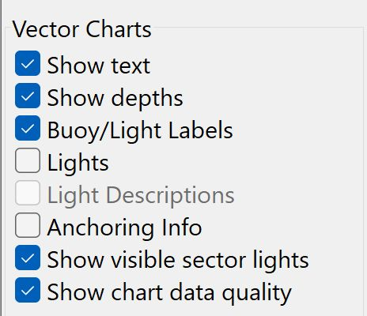
Show Text
Displays text in accord with Options set in Toolbar > Options > Charts > Vector Charts
-
Toggles Chart Text on/off or keyboard shortcut "T".
-
More detailed Options Vector Charts > Chart Texts

Show Depth
Displays depts and depth contours in accord with Options set in Toolbar > Options > Charts > Vector Charts Other settings also affects when soundings are displayed, for example "Reduced Detail at Small Scale".
-
Toggles Chart Depth on/off or keyboard shortcut "S" for soundings.
-
More detailed Options Vector Charts > Depth Settings
-
More detailed Options Vector Charts > Shallow, Safety and Deep Depths
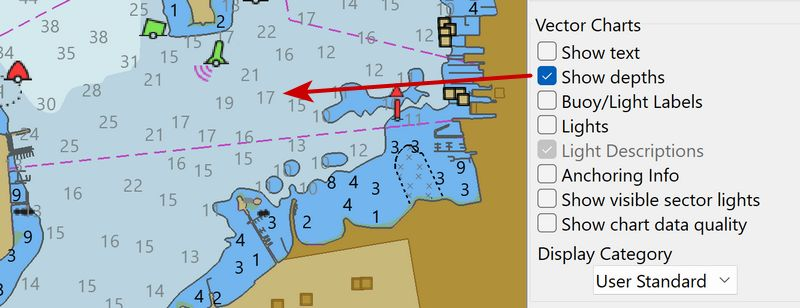
The bold black numbers are not soundings. The bold number 20 refers to
the land height of the unnamed cay SW of the number. On official paper
charts the soundings are printed in italics. Safety Depth is set to 20
m, so the 20 m contour stands out in black.
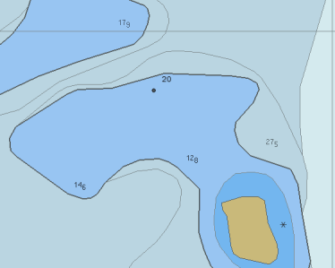
How soundings behave when zooming. "Chart sounding symbols" are
represented by small raster images. As a chart is zoomed in, these
raster symbols will increase in size by about 2x. Currently they
increase in size well after the "Overzoom" notice, for the largest
scale chart available
Show Bouy/Light Labels
Displays names and purposes of aids to navigation, such as number or name of buoys, information about conspicuous objects etc. Options > Charts > Vector Display > Important Text Only should not be checked.
-
Toggles Bouy/Light Labels or use Keyboard shortcut “T”.
-
Future Reserved keyboard shortcut "B"
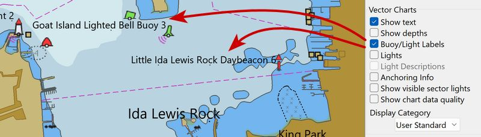
Show Lights
Displays Lighthouses and buoy lights.
-
Toggles Bouy/Lights or use keyboard shortcut “T”
-
Future Reserved keyboard shortcut "L"
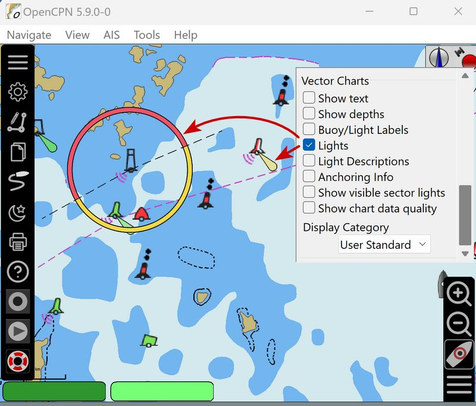
Show Light Descriptions
Control display of light characteristics. Checking this displays a label with a text describing the marker or lighthouse’s characteristics.
-
Toggle Light Descriptions on/off or use Keyboard Shortcut "T"
-
Future Reserved keyboard shortcut "K"

Mouse Rollover for Extended Light Sectors
A light sector is extended if the words "Leading" or "Directional"
can be found in the Object Query.
Otherwise, the rules are
-
Show Lights has to be ON.
-
The sector is < 15° wide.
-
It is White.
-
The light also has Red and-or Green sectors.
These rules generally work but there are exceptions. As always, it’s the responsibility of the navigator, how a light and its sectors are used for practical navigation.
It is often difficult, on a vector chart, to see what light-sectors
do.
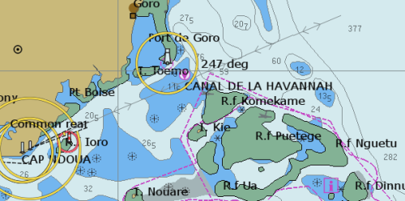
Activate extended light sectors by holding the mouse cursor over a
light. All sectors are extended and leading white sectors are emphasized
in yellow and extend the full nominal range of the light.
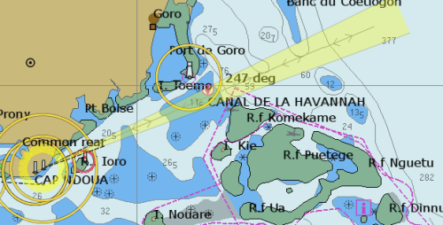
Light sectors as narrow as 0.3° are displayed.
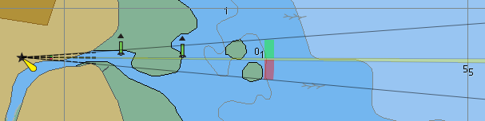
Owls Head Light: Lights = inner circle, Show visible Sector Lights =
Outer circle
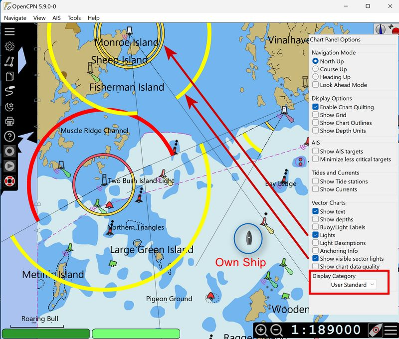
Right click Object Query has 16nm range, but it is not "Leading" or "Directional", so it is not "Extended Sector"
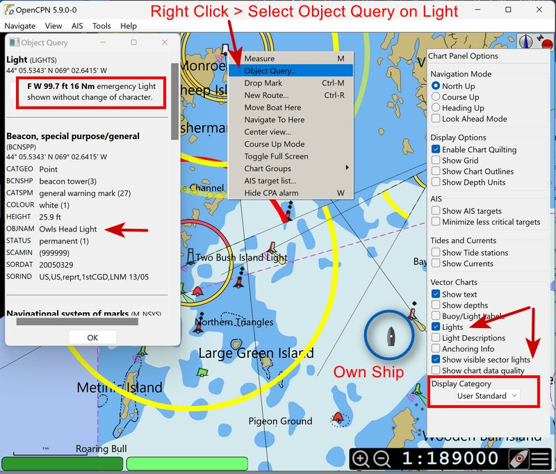
Portmouth, NH Extended Light Sector shows with a Mouse Rollover.
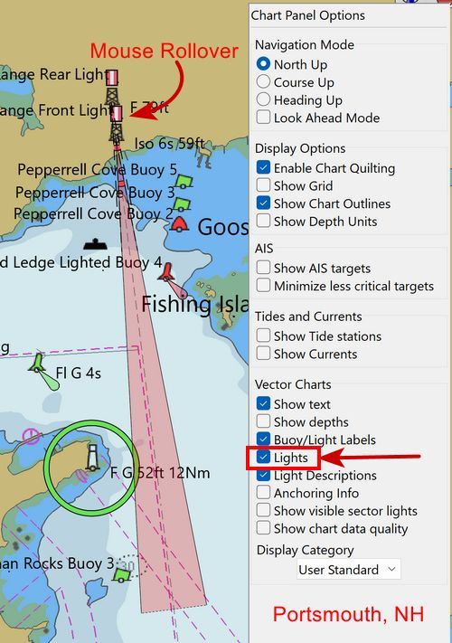
Object Query shows "Leading"
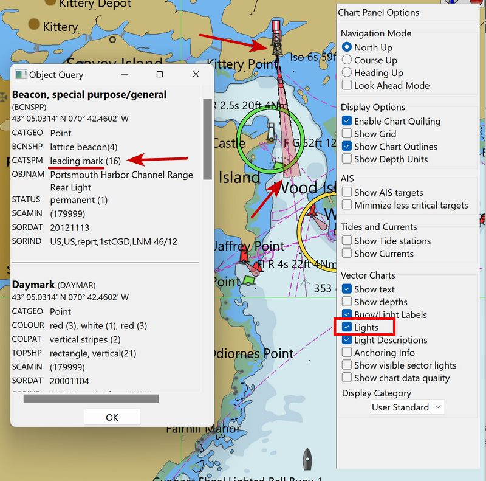
Show Anchoring Info
-
Toggle Anchoring Info on/off or keyboard shortcut "A".
STANDARD Mode shows Anchoring Info by default.
ALL and USER Standard Mode with Anchoring Info ON, will show Anchor
info.
ALL mode with Anchoring Info ON and Text ON will show seabed area
soil.
USER Standard Mode with Seabed Area Objects layer ON and Show Text ON
shows seabed area.
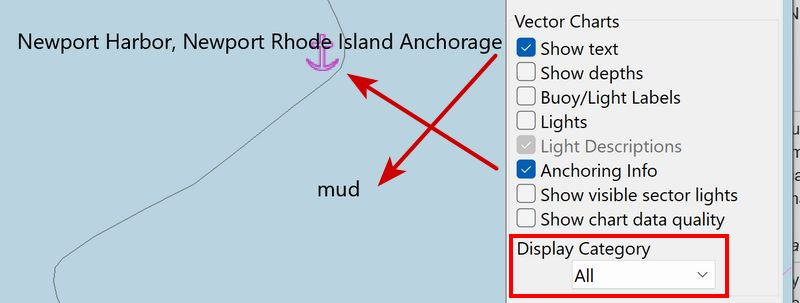
Show Visible Sector Lights
Vessel within "sector" and "range" for Sector Light to be shown lit
Show Sector Lights that are theoretically "visible to navigator on vessel if he/she looks out the window". The vessel must be within the "sector", and within "range" for it to be shown lit. Review the example below.
-
When the ship moves within range, and within the light’s sector, the Sector Light will light up and appear on the chart.
-
The light object must also have a noted sector "range".
-
Not all lights have a "range". Sometimes the explanation from the HO is: "there are so many obstructions, like islands, around so, to set a range is not meaningful." In that case sector range is generally not shown. There are many light objects that do not have a visible sector light.
-
Toggle visible sector lights on/off.
-
More detailed Options Settings
All lights and one leading sector mouse over. OwnShip located in
range.
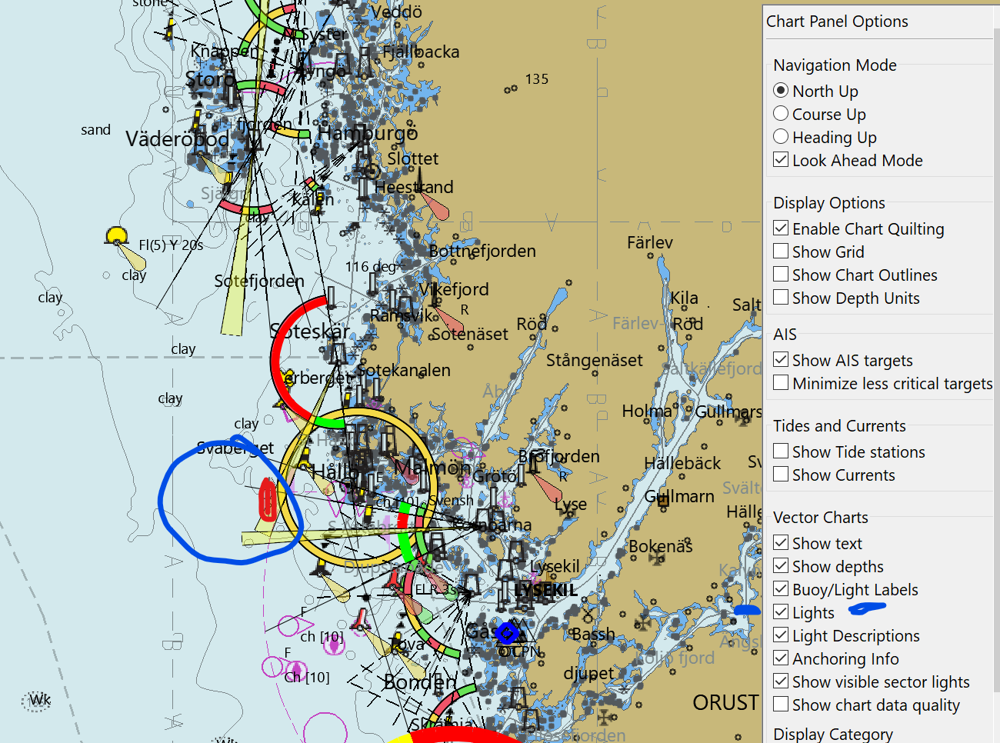
Show visible light sectors. OwnShip located in range.
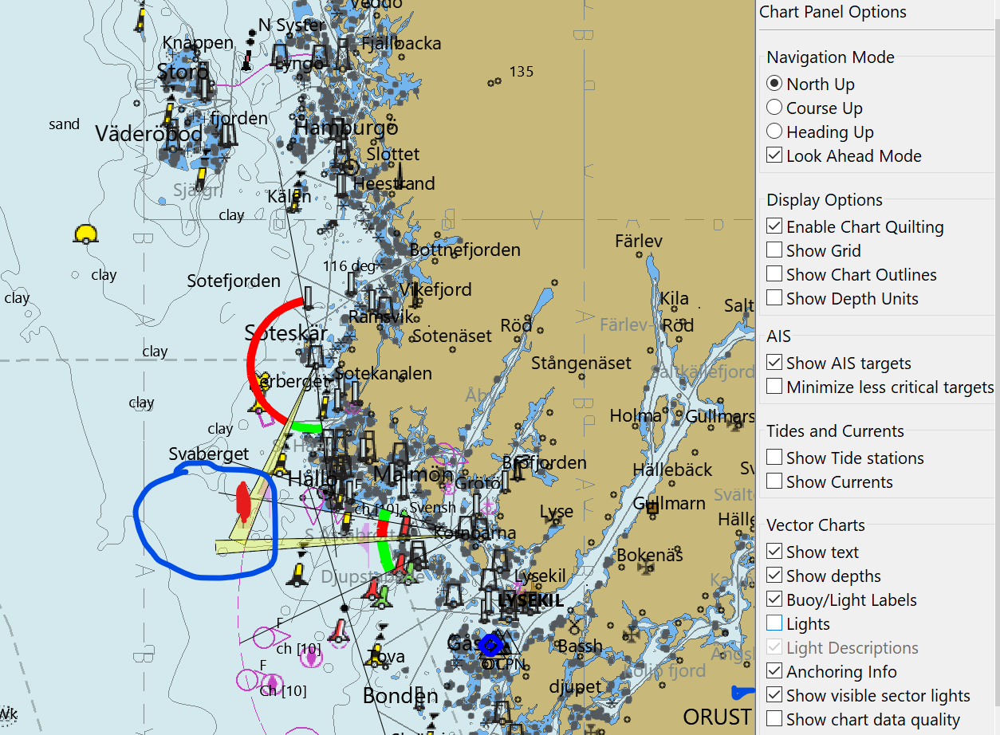
Show Chart Data Quality
-
Toggle Chart Data Quality on/off.
-
See Quality of Data
Check Show Chart Data Quality in Chart Panel Options > Vector Charts This toggles the "Quality of Data" object in User Standard Chart Display Now the Chart Data Quality symbols should be present in the chart.
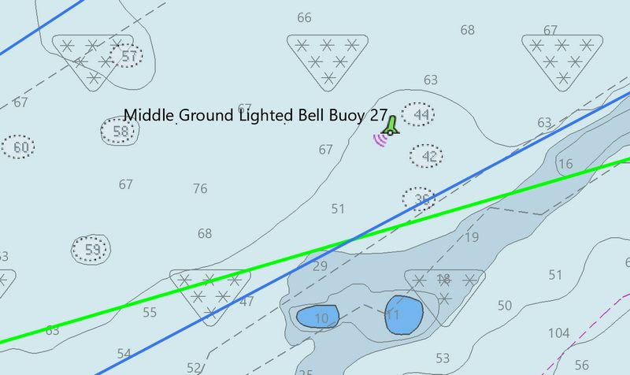
Quality of Data Symbols
There are many questions about these chart symbols, which provide information about the chart itself. With this switch on, an object query reveals such information as the buoy system for the area, the Quality of the Survey, and the latest NTM update and sources for the chart.
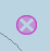…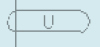…
On raster-charts there is often a diagram showing the sources and age of surveys of the charts.
On vector-charts, when activated, symbols are shown all over the screen. An object query of these symbols gives the details. When using "Mariners Standard" and "Chart Information Objects" is ticked, it is possible to get rid of the quality symbols covering the chart by unchecking "Quality of data".

-
On paper or Raster charts there is usually a source diagram showing the dates of the survey of different parts of the area covered by the chart.
-
If the source is from 1850, for example, we know that it’s an unreliable lead-line survey. On the other hand if it’s a recent survey done with a multi-beam sounder it’s a quite reliable chart.
-
The same info is present in modern vector charts, but in a different format. Click image for larger version Name: rty.png Views: 7 Size: 48.5 KB ID: 157270 This is essential info about the reliability of the chart. At the same time you definitely don’t want to see this info all the time. To see this information in OpenCPN you have to activate Chart Information Objects in Vector Chart Display. Then check Show Chart Data Quality in Chart Panel Options
-
Most users just want to get rid of the triangles, but please consider that information informs you about the Quality of the Survey or Quality of Data.
QUALITY OF DATA
- Category of Zone of Confidence = Un-assessed. - The feature being rendered is S57 Text relating to **M_QUAL**, called "Quality of Data" in "Mariners Standard" - This is a meta-object describing the quality of data shown. The Attribute of interest is **CATZOC**, or "Category of Zone of Confidence". - The value on most US ENC's is "6", or "Un-assessed". Thus, the 'U'.
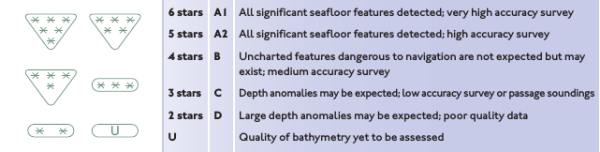
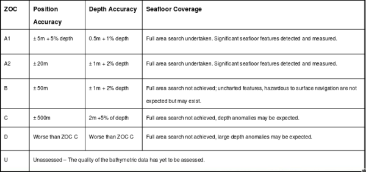
How to remove those "U" and * on my vector charts (M_QUAL and CATZOC)?
- In //Options > Charts > Vector Charts Tab// when using Display Category "All", Uncheck //"Chart Information Objects"// which hides the "U" symbols . - In //Options > Charts > Vector Charts Tab// for a finer grain control when using Display Category "Mariners Standard", In the selection List Box, Uncheck //"Quality of Data"// which hides the "U" symbols.
Vector Chart Hot Keys
The Hot Keys or Keyboard Shortcuts below all work in "ALL" and "Users standard". The hotkeys also work in the other display categories, as long as the feature exists in the category. In "Base" for example, "S" works, but "L" does not. Features are toggled on-off with the keys.
Note: Hot Keys can be different for OS’s. See Keyboard Shortcuts
-
T Texts. The visible text is still affected by the settings in the Vector Charts settings tab.
-
L Lights. Lighthouses as well as buoys etc are all affected.
-
S Soundings.
-
A Anchoring. This will affect information needed when anchoring. Anchor berth and Anchorage areas. Submarine cables and pipelines. Type of bottom. Mariners Standard -Anchor berth and Anchorage area display categories.
-
O Chart Outlines.